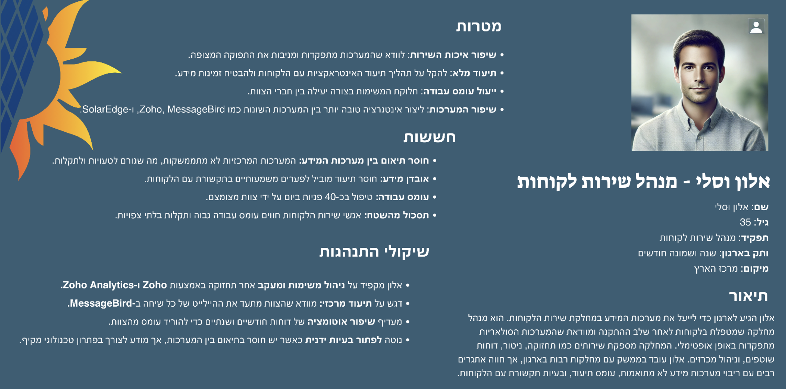
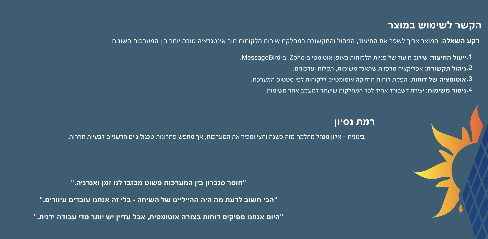

אודות Volta Solar
Volta Solar הוא ארגון המתמחה בתכנון, התקנה ותפעול של מערכות סולאריות עבור לקוחות פרטיים, עסקיים וציבוריים.
מטרתו של הארגון היא לקדם פתרונות אנרגיה מתחדשת, להוזיל עלויות עבור לקוחותיו ולהפחית את טביעת הרגל הפחמנית.
החברה משלבת טכנולוגיה מתקדמת ושירות לקוחות אישי על מנת לספק חוויית לקוח מיטבית.
פרסונה
 סיכום ראיונות ושאלונים
תוצאה 1
תוצאה 2
תוצאה 3
תוצאה 4
תוצאה 5
סיכום ראיונות
אלון דיבר על התמחותו בתחום הטכנולוגי ועל היכולת להסתגל לשינויים, תוך שמירה על גישה פרקטית לעבודה.
אלעד שיתף את חשיבות הצמיחה האישית והמקצועית עבורו, תוך דגש על יכולת התמודדות עם אתגרים.
לנה הציגה את תהליך העבודה שלה והחשיבות שהיא מייחסת לשיתוף פעולה ולתיאום בין חברי הצוות, והדגישה את השפעתה של התקשורת הבין-אישית על הצלחה בעבודה.
חלי סיפרה על ניסיון העבודה שלה בסביבות דינמיות ומהירות, וציינה את החשיבות של עבודה תחת לחץ וגמישות במצבים משתנים.
יחד, הארבעה הציגו גישות שונות אך משותפות לצמיחה מקצועית ועבודת צוות, כשהם מתמקדים בעיקר בהתמודדות עם אתגרים וביכולת ללמוד ולהסתגל בסביבה משתנה.
אב טיפוס
דרישות פונקציונליות
- המערכת תאפשר גרירה של משימות והחלפת מקומות.
- המערכת תייצא פעולות לביצוע אוטומטית.
- אפשרויות סימון בטופס: נדרש / לא נדרש.
- המערכת תאפשר הזנת הערות.
- יצירת התראות למשימות שונות.
דרישות לא פונקציונליות
- שמירת רשימות ומידע בצורה נגישה.
- התאמה אישית לכל מחלקה.
- תצוגת מידע ברורה ונוחה.
- שדות חובה למילוי בטופס.
- עדכון מיידי של שינויים (עד 1 שניות).
דרישות נוספות
Inclusive
תמיכה בקוראי מסך, צבעים ניגודיים ופונטים ברורים.
Fairness
סדר משימות מבוסס על דחיפות, עומס וזמן ביצוע.
Privacy
הצפנה אוטומטית לפי תקני GDPR.
Sustainability
הפקת דוחות דיגיטליים בלבד.
ארכיטקטורה
המערכת המוצעת מתמקדת ביצירת ממשק נוח ויעיל עבור אנשי השטח, תוך צמצום עומס הזנת הנתונים והעברת מידע רלוונטי לאנשי המטה בצורה ישירה ומהירה.
- הפתרון יתבסס על Web 2.0 כדי להבטיח גישה מכל מכשיר עם חיבור לאינטרנט.
- במשרדי החברה יוקם שרת שיכיל מסד נתונים מבוסס NoSQL, המאפשר גמישות להתאמות עתידיות בהתאם לצרכים המשתנים.
- המערכת תעבוד במתודולוגיית SOA, ותאפשר אינטגרציה עם התוכנות הקיימות בחברה לצורך אוטומציה של העברת נתונים בין המערכות.
- תתאפשר תקשורת דו-כיוונית: אנשי המטה יעדכנו את סטטוס הטיפול בתקלה בזמן אמת, ואנשי השטח יקבלו את העדכונים ישירות באפליקציה.
תמצית הפיצ'ר
הפיצ'ר שאנו מפתחים הוא מסמך דינמי לתיעוד ומעקב תקלות, המאפשר שקיפות מלאה בין אנשי השטח לאנשי המטה.
תחילה יצרנו אב-טיפוס מנייר להמחשה ולקבלת פידבק ראשוני, ולאחר מכן עברנו לסקיצה מעמיקה בכלי עיצוב כמו FIGMA לצורך דיוק הפרטים.
המערכת כוללת יכולת לצרף תמונות להבהרת התקלות ואינדיקטור סטטוס המתעדכן בזמן אמת, המבטל את הצורך בבירור ידני על התקדמות הטיפול.
בעלי עניין
בעלי עניין ראשיים
- 🛠️ אנשי שטח: אחראים על הזנת התקלות בזמן אמת.
- 👨💼 מנהל מרחב: מפקח על דיווחי התקלות והעברת המידע.
בעלי עניין משניים
- 📊 מנהלי פרויקטים: משתמשים במידע לצורך קבלת החלטות ותיאום.
- 📞 שירות לקוחות (CSLs): מספקים עדכונים וטיפול שוטף בתקלות.
האתגר המרכזי
- 📍 גישור הפערים בין עבודת השטח לבין אנשי המטה.
- 📊 אנשי השטח מתמודדים עם תנאי עבודה מאתגרים ותקלות בלתי צפויות.
- 🔗 אנשי המטה זקוקים למידע ברור וממוקד שיאפשר להם להבין את הבעיה, לפתור אותה או ללמוד ממנה.
- ⚡ חיבור בין הצדדים מחייב ממשק נוח לאנשי השטח ויכולת להעביר את המידע בצורה מדויקת ותמציתית למטה.
מטרת הפתרון
ליצור מערכת שמספקת לאנשי השטח חוויית שימוש קלה ופשוטה ותומכת באנשי המטה עם מידע ענייני ורלוונטי המאפשר שיפור, למידה וייעול תהליכים.
אלמנטים של משחוק
המערכת משלבת אלמנטים של משחוק כדי להגביר מוטיבציה ומעורבות של אנשי השטח והמטה.
תגמול על דיווחים מדויקים: דיווחי תקלות מלאים מזכים בנקודות הניתנות לצבירה לפרסים, כגון חופשות או בונוסים.
תחרות צוותית: תחרויות ידידותיות בין צוותים מבוססות דיווחים מהירים ומדויקים, עם פרסים חודשיים לצוות המוביל.
משוב מיידי: כל דיווח מזכה את המדווח במשוב ויזואלי מותאם אישית, בשילוב אנימציות חווייתיות המדגישות את התקדמות התהליך.
מנגנונים אלה מחזקים תחושת מסוגלות, שייכות, ובניית אמון בין אנשי השטח למטה.
תיאוריות מוטיבציה
הפרויקט משלב עקרונות SDT, Flow ומשחוק כדי לשפר את המוטיבציה והמעורבות של העובדים.
כיצד נגיע למצב של Flow או Group Flow?
על מנת להגיע למצב של Flow בעבודה עם הפיצ'ר, התהליך תוכנן כך שהוא ישלב את המרכיבים המרכזיים:
- בהירות במטרות: הפיצ'ר מספק מטרות ברורות עם נקודות ציון התקדמות (milestones) מדויקות שמאפשרות לעובדים להבין את יעדי המשימה שלהם.
- אתגר מותאם: המערכת מזהה את רמת המיומנות של העובד ומספקת לו משימות שתואמות ליכולותיו, תוך שמירה על איזון בין קושי לסיפוק.
- פידבק מיידי: הפיצ'ר מספק לעובדים משוב בזמן אמת על התקדמותם, מה שמחזק תחושת שליטה וביטחון.
- עבודה שיתופית: במצבים קבוצתיים, הפיצ'ר מקדם שיתוף פעולה דרך יצירת דינמיקה של Group Flow שמדגישה מטרה משותפת והשלמה הדדית.
שימוש בתאוריית SDT (Self-Determination Theory)
עקרונות SDT שולבו בתכנון הפיצ'ר כדי לענות על הצרכים הפסיכולוגיים של העובדים:
תחושת מסוגלות (Competence)
הפיצ'ר מעוצב כך שהוא מספק כלים ואפשרויות שמעצימים את יכולת העובד לפתור בעיות ולהתקדם בעבודה.
תחושת אוטונומיה (Autonomy)
העובדים יכולים להתאים את סביבת העבודה שלהם ולבחור את דרכי הפעולה המתאימות להם בתוך המערכת.
תחושת שייכות (Relatedness)
המערכת כוללת כלים לקידום שיתוף פעולה בין צוותים ושמירה על קשר עם קולגות.